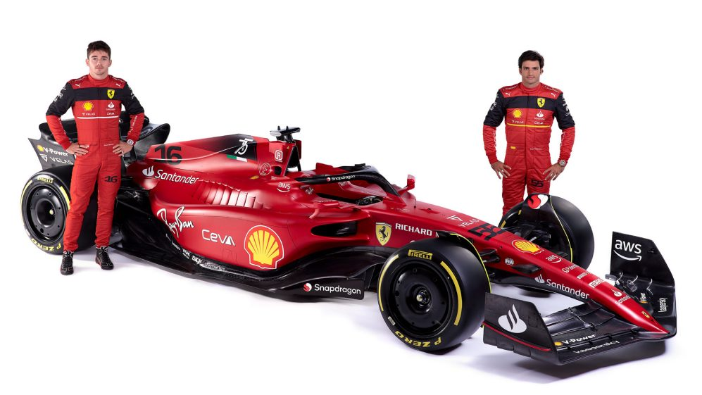

Ferrari is the oldest surviving and most successful Formula One team, having competed in every world championship since the 1950 Formula One season. However, ever since the end of reign of Michael Schumacher and the surprising win by Kimi Räikkönen, the team has been in a limbo states. Since 2007, the team had not claimed any championship. Plagued with car competitiveness, driver issue, and internal politic, The team always lack the final push to the top step of the podium.
This year marks a difference. Compared to the winless 2020 and 2021 cars, the F1-75 was notably more competitive, as the team took pole and victory at the first race in Bahrain. This feat was repeated in Australia, despite the team's reluctance to add updates to the car. Compared to its main rival, the Red Bull RB18, the F1-75 often displayed superior cornering speeds, but the RB18 was better on the straights. The drivers lineup are young but with great racing experience. Charles Leclerc has display his talents as a racing driver in top quality. Carlos Sainzs Jr. is also highly regarded as one of the most consistent young driver in the business.
What can possibly go wrong?
